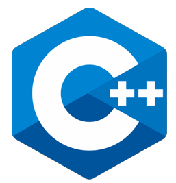
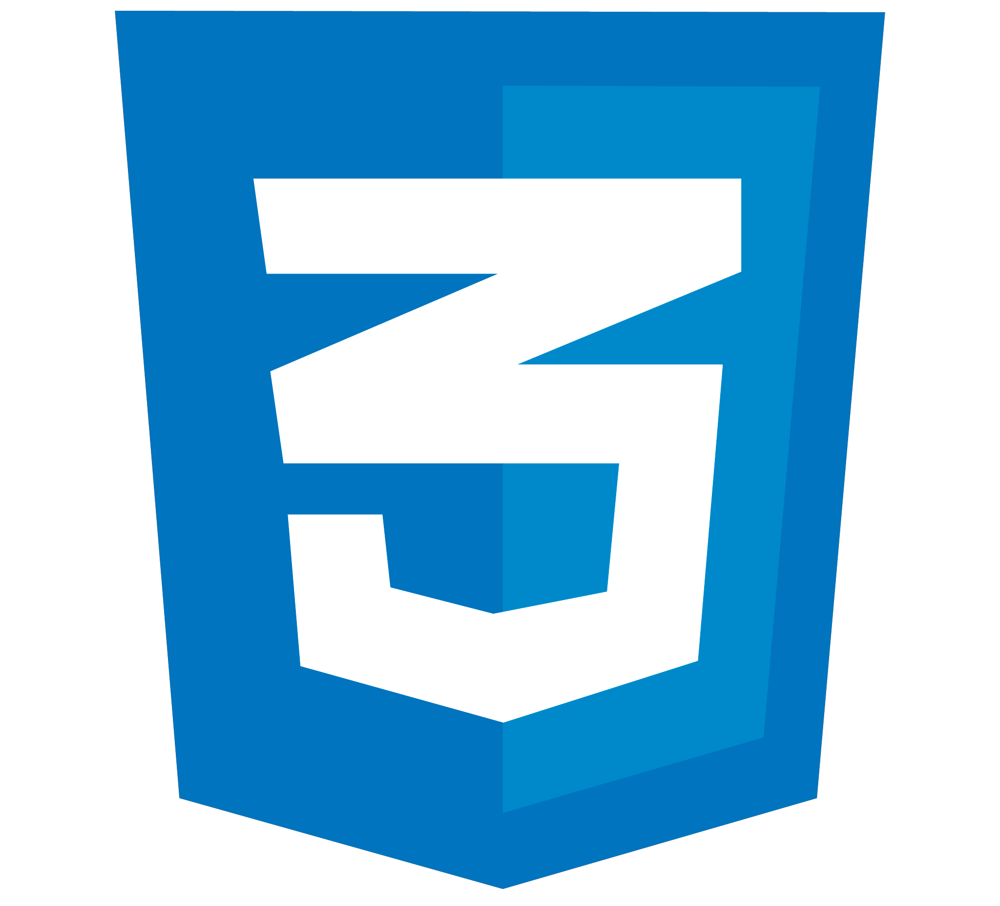

MI CV
Quién soy
Me presento como una persona entusiasta, apasionada por el conocimiento y motivada por la curiosidad. Me interesa transitar un camino de aprendizaje y desafíos, apoyándome en las buenas prácticas y contribuyendo a un equipo comprometido y orientado hacia los resultados.
Formación académica
2022 - Presente: Tecnicatura Universitaria en Programación, Universidad Tecnológica Nacional (UTN).
En curso.
2018 - 2021: Tecnicatura Superior en Laboratorio, Instituto Superior Facultar.
Graduada.
2016 - 2017: Ingeniería en Energía, UNSAM, Gral. San Martín.
Incompleto.
2006 - 2008: Bachiller en Ciencias Sociales con orientación en Inglés, EEM Nº6, San Fernando.
Graduada.
Cursos
2022: Master en JavaScript. Udemy.
Desarrollo web con HTML, CSS y JavaScript, conceptos básicos de POO y uso de las bibliotecas JQuery y JQuery UI.
2020: Diseño web con HTML5 + CSS. Fundación Telefónica.
Conceptos básicos de diseño web.
Experiencia
8/2022 - Presente: UTN FRGP· Ayudante de trabajos prácticos. Resolución de dudas y consultas de alumnos de la materia Laboratorio de Computación I, perteneciente a la Tecnicatura Universitaria en Programación.
7/2019 - 5/2022: LACba · Técnica de Laboratorio. Extracción y procesamiento de muestras en sección de bacteriología. Incluyendo trabajo de mesada, control de stock de materiales y formación de nuevos técnicos del área.
6/2018- 7/2018 Wololó · Data entry (eventual). Ingreso de datos y configuración de actividades H5P de aulas virtuales en plataforma Moodle.
Herramientas
IDIOMAS
• Inglés •
TECNOLOGÍA
• C ++ • HTML5 • CSS3 • JavaScript • JQuery •




Soft Skills
• Compromiso • Honestidad • Empatía • Respeto • Comunicación • Inclusión • Trabajo en equipo • Atención al detalle • Capacidad de adaptación • Creatividad • Responsabilidad •
Hobbies
• Bonsai • Música • Danzas • Ciclismo • Lectura • Acrobacia • Dibujo •